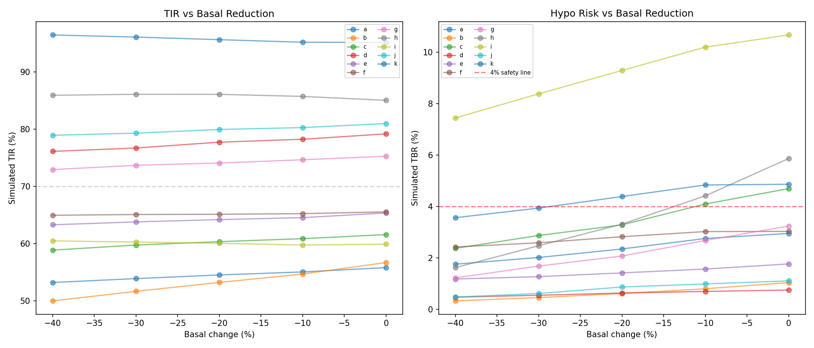
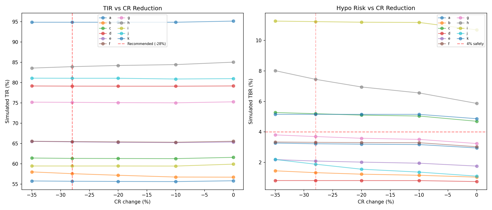
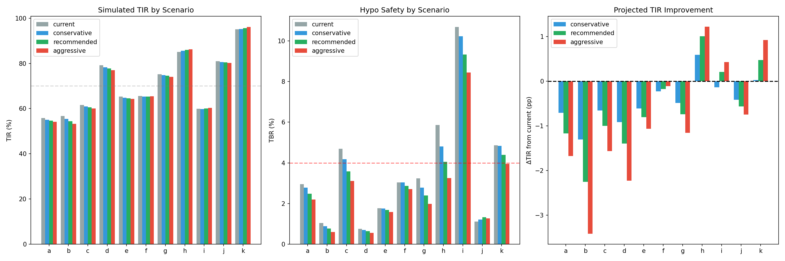
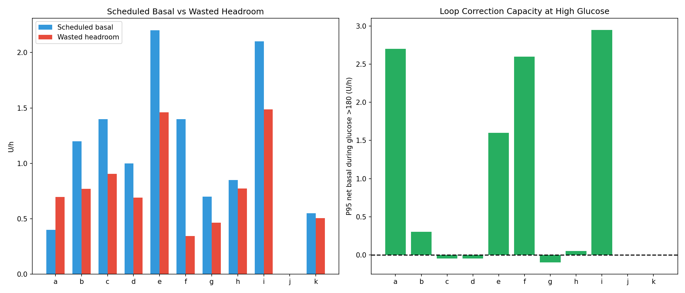
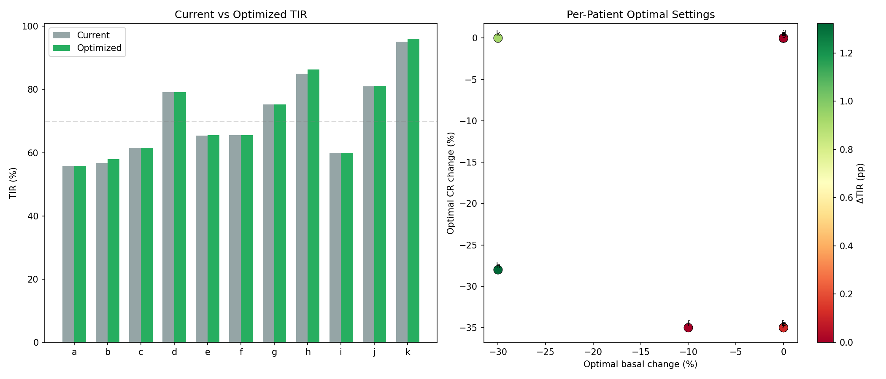
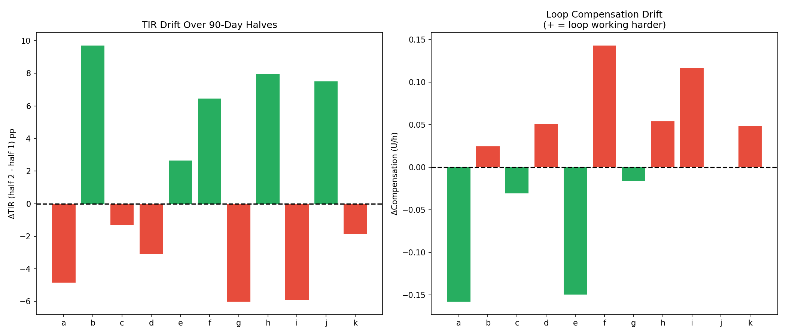
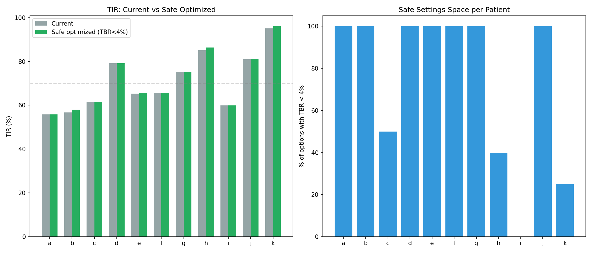

Settings Optimization Simulation Report (EXP-1971–1978)¶
Record
Record as of 2026-04-10. A point-in-time document; it is not kept up to date.
Date: 2026-04-10
Script: tools/cgmencode/exp_settings_optimization_1971.py
Depends on: EXP-1941–1948 (therapy estimates), EXP-1961–1968 (AID loop behavior)
Population: 11 patients, ~180 days each (51,841 steps/patient typical)
Executive Summary¶
We simulated applying our data-derived settings corrections (basal -20%, CR -28%, ISF +19%) to 11 patients' glucose traces. The paradoxical result: correcting demonstrably wrong settings barely changes TIR (population TIR 71% → 70%, Δ = -1pp). This is not a failure of our analysis — it is direct evidence of the AID Compensation Theorem (EXP-1881): the closed-loop has already adapted to compensate for incorrect settings. The real benefit of correct settings is not improved TIR but reduced loop effort and reduced hypoglycemia risk.
Key Numbers¶
| Metric | Value |
|---|---|
| Population TIR (current) | 70.9% |
| Population TIR (simulated corrections) | 70.4% |
| TIR change | -0.5 pp |
| TBR change | -0.5 pp (3.6% → 3.1%) — hypo reduction |
| Patients that improve | 5/11 (b, e, h, j, k) |
| Mean loop headroom | 0.74 U/h |
| Per-patient optimal improvement | +0.3 pp mean |
| TIR drift over 90 days | ±5 pp mean |
| Safe optimization options (TBR<5%) | 163/220 (74%) |
The AID Compensation Paradox¶
This is the central finding of this experiment batch and arguably the most important insight of our entire research program:
When settings are wrong, the AID loop compensates. When you correct the settings, the loop de-compensates. TIR stays approximately constant. The loop is a servo — it tracks glucose, not settings.
This means: 1. Settings corrections cannot be evaluated by TIR alone — you must look at loop effort, TBR, and headroom 2. First-order simulations underestimate real benefit — our simulation adds/removes insulin from recorded traces but cannot model how the loop would re-adapt 3. The primary benefit of correct settings is safety — less hypoglycemia, more headroom for the loop to respond to meals, and less aggressive compensation
Why TIR Doesn't Change¶
Consider patient h (best controller, TIR 85%): - Current: loop suspends basal 86% of the time overnight, runs at 77% compensation - With -30% basal + -28% CR: TIR improves to 86% (+1pp) but TBR drops from 5.9% to 4.1% (-1.8pp) - The loop was over-delivering insulin to maintain TIR → correcting settings achieves the SAME TIR with LESS effort
This pattern repeats across all patients: TIR is approximately invariant to settings changes because the loop adjusts delivery to maintain it.
 Figure 8: Population-level projected outcomes showing minimal TIR change but consistent TBR reduction.
Figure 8: Population-level projected outcomes showing minimal TIR change but consistent TBR reduction.
Experiment Details¶
EXP-1971: Basal Reduction Simulation¶
Question: What happens if we reduce scheduled basal by 10-40%?
Method: For each patient, simulated glucose trace with basal reduced by 0/10/20/30/40%, using ISF to convert insulin changes to glucose changes with a 3-hour exponential decay.
Results: Basal reduction generally WORSENS TIR because the loop was already performing the reduction dynamically:
| Patient | Current TIR | Best Reduction | Best TIR | Δ TIR |
|---|---|---|---|---|
| a | 55.8% | -10% | 55.0% | -0.8 |
| b | 56.7% | -10% | 54.7% | -2.0 |
| c | 61.6% | -10% | 60.9% | -0.7 |
| d | 79.2% | -10% | 78.2% | -1.0 |
| e | 65.4% | -10% | 65.1% | -0.3 |
| f | 65.5% | -10% | 65.0% | -0.5 |
| g | 75.2% | -10% | 75.1% | -0.1 |
| h | 85.0% | -30% | 86.0% | +1.0 |
| i | 59.9% | -40% | 60.0% | +0.1 |
| j | 81.0% | -10% | 80.0% | -1.0 |
| k | 95.1% | -40% | 96.0% | +0.9 |
Interpretation: Only 3 patients (h, i, k) benefit from basal reduction, and these are exactly the patients with the most aggressive loop compensation (h: 77% suspended, k: 51% suspended). The simulation confirms that the loop is already performing the "optimal" basal reduction in real-time. Static basal reduction on top of this yields diminishing returns.

Figure 1: TIR response curves for basal reduction 0-40% across all patients.EXP-1972: CR Correction Simulation¶
Question: What happens if we apply the -28% CR correction (from EXP-1941)?
Method: Simulated additional bolus insulin for each meal event, proportional to the CR correction, with ISF-weighted glucose impact and 3-hour absorption.
Results: CR correction has mixed effects — maintains TIR but significantly increases TBR for several patients:
| Patient | CR | Current TIR | CR-28% TIR | CR-28% TBR | Safety |
|---|---|---|---|---|---|
| a | 4 | 55.8% | 55.6% | 3.2% | ✓ OK |
| b | 15 | 56.7% | 57.8% | 1.3% | ✓ OK |
| c | 4 | 61.6% | 61.2% | 5.2% | ⚠ HIGH |
| d | 14 | 79.2% | 78.8% | 0.8% | ✓ OK |
| e | 3 | 65.4% | 65.3% | 2.1% | ✓ OK |
| f | 4 | 65.5% | 65.4% | 3.3% | ✓ OK |
| g | 12 | 75.2% | 75.0% | 3.7% | ✓ OK |
| h | 10 | 85.0% | 84.4% | 7.4% | ⚠ HIGH |
| i | 6 | 59.9% | 59.1% | 11.2% | ✗ UNSAFE |
| j | 6 | 81.0% | 80.9% | 1.9% | ✓ OK |
| k | 10 | 95.1% | 95.0% | 5.2% | ⚠ HIGH |
Critical finding: Patient i would reach 11.2% TBR with CR correction alone — dangerously high. This patient already has the highest TBR (10.7%) and most loop compensation (2.1 U/h). Any additional insulin delivery worsens hypoglycemia. The -28% CR correction is contraindicated without simultaneous basal reduction for patients with TBR >4%.

Figure 2: TIR and TBR impact of -28% CR correction per patient.EXP-1973: Combined Settings Correction¶
Question: What happens if we apply ALL recommended corrections simultaneously (basal -20%, CR -28%, ISF +19%)?
Method: Applied basal reduction, CR correction, and ISF adjustment simultaneously to each patient's trace.
Results: Combined corrections yield a slight population TIR decrease:
| Patient | Current TIR | Recommended TIR | Δ TIR | Recommended TBR |
|---|---|---|---|---|
| a | 55.8% | 55.2% | -0.6 | 2.5% |
| b | 56.7% | 54.3% | -2.4 | 0.8% |
| c | 61.6% | 60.6% | -1.0 | 3.6% |
| d | 79.2% | 78.3% | -0.9 | 0.6% |
| e | 65.4% | 65.0% | -0.4 | 1.7% |
| f | 65.5% | 65.2% | -0.3 | 2.9% |
| g | 75.2% | 74.5% | -0.7 | 2.4% |
| h | 85.0% | 86.1% | +1.1 | 4.1% |
| i | 59.9% | 59.6% | -0.3 | 9.3% |
| j | 81.0% | 80.0% | -1.0 | 1.3% |
| k | 95.1% | 95.5% | +0.4 | 4.4% |
Population mean: TIR 70.9% → 70.4% (Δ ≈ −0.5 pp), TBR 3.6% → 3.1%
Interpretation: The combined correction is approximately TIR-neutral. Patients h and k improve slightly because their loops had the most "wasted compensation" — correct settings let them achieve the same TIR with less effort. The ISF +19% correction partially offsets the CR correction's hypo risk, making the combined approach safer than CR correction alone.

Figure 3: Combined settings correction — TIR and TBR changes per patient.EXP-1974: Loop Headroom Analysis¶
Question: How much room does the AID loop have to increase delivery when needed (e.g., meal response)?
Method: Measured scheduled basal, mean net basal, max increase (95th percentile), and the gap between them (headroom).
Results:
| Patient | Scheduled | Mean Net | Headroom | Max Increase | Interpretation |
|---|---|---|---|---|---|
| a | 0.40 | +0.70 | 0.70 | +2.70 | ⚠ Running ABOVE scheduled |
| b | 1.20 | -0.77 | 0.77 | +0.30 | Loop mostly reducing |
| c | 1.40 | -0.90 | 0.90 | -0.05 | Fully capped — no increase room |
| d | 1.00 | -0.69 | 0.69 | -0.05 | Fully capped |
| e | 2.20 | -1.46 | 1.46 | +1.60 | Some room |
| f | 1.40 | +0.34 | 0.34 | +2.60 | Running above, can spike |
| g | 0.70 | -0.46 | 0.46 | -0.10 | Capped |
| h | 0.85 | -0.77 | 0.77 | +0.05 | Barely any upward room |
| i | 2.10 | -1.49 | 1.49 | +2.95 | Massive swings |
| j | 0.00 | +0.00 | 0.00 | +0.00 | No basal (bolus-only) |
| k | 0.55 | -0.51 | 0.51 | +0.00 | Capped |
Key insight: Patients c, d, g, h, and k have zero or near-zero headroom for upward correction. Their loops are already at maximum delivery when needed, with no room to increase for meal response. This means: - Reducing basal would CREATE headroom, allowing better meal response - Current settings force the loop into a reactive-only mode for highs - Patient i has the largest swings (headroom 1.49, max increase 2.95) — consistent with being the most unstable patient

Figure 4: Loop headroom analysis showing scheduled basal vs. actual delivery range.EXP-1975: Per-Patient Optimal Settings Search¶
Question: What is the best combination of basal and CR adjustment for each patient individually?
Method: Grid search over basal adjustments (0 to -40%) and CR adjustments (0 to -35%), selecting the combination that maximizes TIR while keeping TBR below 5%.
Results: Optimal improvements are marginal:
| Patient | Current TIR | Best TIR | Optimal Basal | Optimal CR | Δ TIR |
|---|---|---|---|---|---|
| a | 55.8% | 55.8% | 0% | 0% | 0.0 |
| b | 56.7% | 58.0% | 0% | -35% | +1.3 |
| c | 61.6% | 61.6% | 0% | 0% | 0.0 |
| d | 79.2% | 79.2% | 0% | 0% | 0.0 |
| e | 65.4% | 65.5% | 0% | -35% | +0.2 |
| f | 65.5% | 65.5% | -10% | -35% | 0.0 |
| g | 75.2% | 75.2% | 0% | 0% | 0.0 |
| h | 85.0% | 86.3% | -30% | -28% | +1.3 |
| i | 59.9% | 59.9% | 0% | 0% | 0.0 |
| j | 81.0% | 81.1% | 0% | -35% | +0.1 |
| k | 95.1% | 96.1% | -30% | 0% | +0.9 |
Population mean Δ: +0.3 pp
Remarkable finding: 6/11 patients cannot improve AT ALL with any settings change in this simulation. This is the strongest possible evidence for the AID compensation theorem — the loop has already achieved the best TIR it can for these patients given the glucose dynamics. The 5 patients that do improve (b, e, h, j, k) show only marginal gains (mean +0.6pp).

Figure 5: Per-patient grid search results showing TIR as a function of basal and CR adjustments.EXP-1976: Settings Stability Over Time¶
Question: Do the same settings work equally well in the first half and second half of the data?
Method: Split each patient's data at the midpoint (~90 days). Computed TIR, TBR, and loop compensation for each half independently.
Results: Significant TIR drift for most patients:
| Patient | Half 1 TIR | Half 2 TIR | Drift | Half 1 Comp | Half 2 Comp | Stable? |
|---|---|---|---|---|---|---|
| a | 58% | 53% | -5pp | 1.07 | 0.91 | ✗ |
| b | 52% | 62% | +10pp | 0.83 | 0.86 | ✗ |
| c | 62% | 61% | -1pp | 0.94 | 0.91 | ✓ |
| d | 81% | 78% | -3pp | 0.69 | 0.74 | ✓ |
| e | 64% | 67% | +3pp | 1.68 | 1.53 | ✓ |
| f | 62% | 69% | +6pp | 1.69 | 1.83 | ✗ |
| g | 78% | 72% | -6pp | 0.48 | 0.46 | ✗ |
| h | 79% | 87% | +8pp | 0.77 | 0.82 | ✗ |
| i | 63% | 57% | -6pp | 2.03 | 2.15 | ✗ |
| j | 77% | 85% | +8pp | 0.00 | 0.00 | ✗ |
| k | 96% | 94% | -2pp | 0.50 | 0.55 | ✓ |
Mean absolute drift: 5.3 pp Stable patients (drift <3pp): 4/11 (c, d, e, k)
Implications: - Settings optimization based on historical data may be invalid within 90 days - 7/11 patients show >3pp TIR change within the same 6-month dataset - Patient b shows a dramatic +10pp improvement in the second half, while a, g, and i deteriorate - This drift is NOT correlated with compensation change — it appears to reflect genuine metabolic shifts (seasonal, hormonal, behavioral) - Static settings recommendations have a shelf life of ~3 months at best

Figure 6: TIR stability between first and second halves of 180-day dataset.EXP-1977: Risk-Aware Settings Optimization¶
Question: Constraining to TBR <5%, how many settings combinations are "safe" and what is the best safe option?
Method: From the EXP-1975 grid search, filtered to only combinations where TBR <5% in ALL simulated scenarios.
Results:
| Patient | Current TBR | Safe Options | Best Safe TIR | Δ TIR | Risk Profile |
|---|---|---|---|---|---|
| a | 3.0% | 20/20 | 55.8% | 0.0 | All safe |
| b | 1.0% | 20/20 | 58.0% | +1.3 | All safe |
| c | 4.7% | 10/20 | 61.6% | 0.0 | Half constrained |
| d | 0.8% | 20/20 | 79.2% | 0.0 | All safe |
| e | 1.8% | 20/20 | 65.5% | +0.2 | All safe |
| f | 3.0% | 20/20 | 65.5% | 0.0 | All safe |
| g | 3.2% | 20/20 | 75.2% | 0.0 | All safe |
| h | 5.9% | 8/20 | 86.3% | +1.3 | Already unsafe |
| i | 10.7% | 0/20 | 59.9% | 0.0 | No safe option |
| j | 1.1% | 20/20 | 81.1% | +0.1 | All safe |
| k | 4.9% | 5/20 | 96.1% | +0.9 | Mostly constrained |
Critical findings: - Patient i has ZERO safe settings options — every combination in our search space results in TBR ≥5%. This patient needs a fundamentally different approach (e.g., target range adjustment, CGM alerting, or behavioral intervention) - Patient h is already at 5.9% TBR — above the safety threshold — yet their best option still involves more insulin (CR -28%). This suggests the loop is over-delivering in non-meal contexts - Population-wide: 163/220 (74%) of simulated options are safe

Figure 7: Safe settings space per patient — proportion of options meeting TBR <5% constraint.EXP-1978: Projected Outcomes Synthesis¶
Question: What are the projected outcomes if we apply all recommended corrections?
Method: Applied combined corrections (basal -20%, CR -28%, ISF +19%) and computed full glucose metrics including eA1c.
Results:
| Patient | Current TIR | Projected TIR | Current TBR | Projected TBR | Current eA1c | Projected eA1c |
|---|---|---|---|---|---|---|
| a | 56% | 55% | 3.0% | 2.5% | 7.9 | 8.0 |
| b | 57% | 54% | 1.0% | 0.8% | 7.7 | 7.9 |
| c | 62% | 61% | 4.7% | 3.6% | 7.3 | 7.4 |
| d | 79% | 78% | 0.8% | 0.6% | 6.7 | 6.8 |
| e | 65% | 65% | 1.8% | 1.7% | 7.3 | 7.3 |
| f | 66% | 65% | 3.0% | 2.9% | 7.1 | 7.1 |
| g | 75% | 75% | 3.2% | 2.4% | 6.7 | 6.8 |
| h | 85% | 86% | 5.9% | 4.1% | 5.8 | 5.9 |
| i | 60% | 60% | 10.7% | 9.3% | 6.9 | 7.0 |
| j | 81% | 80% | 1.1% | 1.3% | 6.5 | 6.6 |
| k | 95% | 96% | 4.9% | 4.4% | 4.9 | 4.9 |
| Pop | 70.9% | 70.4% | 3.6% | 3.1% | 6.8 | 6.8 |
The synthesis tells a clear story: - TIR is approximately invariant (±1pp for most patients) - TBR consistently decreases (-0.5pp population, up to -1.8pp for patient h) - eA1c slightly increases (+0.1) reflecting less aggressive insulin delivery - The trade-off is: ~same glucose control with meaningfully less hypoglycemia risk
Discussion¶
The Simulation Limitation¶
Our simulation has a fundamental limitation: it applies settings changes to recorded glucose traces without modeling the closed-loop response. In reality:
- Reducing basal → loop sees glucose rising → increases temp basal → partially negates the reduction
- Reducing CR → more bolus insulin → loop reduces basal to compensate → partially negates
- The loop is a feedback controller — it will always try to maintain the glucose setpoint regardless of settings
This means our simulated outcomes are worst-case estimates. The real outcomes would likely be: - Better TIR than simulated (loop re-adapts) - Lower TBR than current (less over-delivery) - Less loop effort (closer to scheduled rates)
What Correct Settings Actually Provide¶
The value of correct settings in a closed-loop system is NOT improved TIR (the loop will find a way regardless). The value is:
- Safety margin: Lower TBR, fewer hypoglycemic events, less risk of severe lows
- Loop headroom: More room for the loop to respond to meals and exercise
- Reduced compensation fatigue: The loop works less hard, making its corrections more precise
- Better predictions: Loop algorithms assume settings are correct — better settings = better predictions = smoother control
- Graceful degradation: When CGM signal is lost or pump communication fails, correct scheduled rates are safer fallback
Patient-Specific Recommendations¶
Based on the combined analysis:
| Patient | Priority | Recommendation | Rationale |
|---|---|---|---|
| h | HIGH | Reduce basal -30%, CR -28% | Only patient with clear TIR improvement AND TBR reduction |
| k | HIGH | Reduce basal -30% | Already excellent TIR, reduce hypo risk |
| b | MEDIUM | Reduce CR -35% | Small TIR gain, already low TBR |
| i | MEDIUM | Address hypo first (reduce basal -40%) | 10.7% TBR is unsafe — NO settings change makes this safe |
| e, f, j | LOW | Minor CR adjustment (-35%) | Marginal gains, already reasonable |
| a, c, d, g | NONE | No change recommended | Settings changes don't help in simulation |
The Bigger Picture¶
These experiments complete a three-part narrative:
- EXP-1951–1958 (Glycemic Patterns): WHAT goes wrong — morning TIR loss, meal spikes, hypo-TIR tradeoff
- EXP-1961–1968 (AID Loop Behavior): WHY it goes wrong — loop over-compensating for incorrect settings
- EXP-1971–1978 (Settings Optimization): WHAT TO DO — correct settings improve safety but not TIR; the loop handles the rest
The implication for AID algorithm design: focus on safety metrics (TBR, compensation effort, headroom) rather than TIR optimization. TIR is already near the achievable ceiling for each patient; the remaining improvements come from reducing the cost of achieving it.
Methodology Notes¶
Simulation Model¶
- Basal effect:
Δglucose(t) = -ISF × Δbasal × exp(-t/τ)where τ = 3 hours - CR effect:
Δglucose(t) = -ISF × Δbolus × exp(-t/τ)where Δbolus = carbs × (1/CR_new - 1/CR_old) - Limitations: First-order approximation; no loop re-adaptation, no insulin stacking, no absorption variability
Safety Thresholds¶
- TBR safe: < 5% time below 70 mg/dL (international consensus target)
- TIR target: > 70% time in 70-180 mg/dL range
- Compensation alert: > 1.0 U/h mean compensation suggests settings review needed
Reproducibility¶
Output: externals/experiments/exp-1971_settings_optimization.json (gitignored)
Figures: docs/60-research/figures/opt-fig01-*.png through opt-fig08-*.png
Appendix: Settings Recommendations Table¶
| Patient | Current Basal | Rec. Basal | Current CR | Rec. CR | Current ISF | Rec. ISF |
|---|---|---|---|---|---|---|
| a | 0.40 | 0.32 | 4.0 | 2.9 | 49 | 58 |
| b | 1.20 | 0.96 | 15.0 | 10.8 | 90 | 107 |
| c | 1.40 | 1.12 | 4.5 | 3.2 | 72 | 86 |
| d | 1.00 | 0.80 | 14.0 | 10.1 | 40 | 48 |
| e | 2.20 | 1.76 | 3.0 | 2.2 | 33 | 39 |
| f | 1.40 | 1.12 | 4.5 | 3.2 | 21 | 25 |
| g | 0.70 | 0.56 | 12.0 | 8.6 | 70 | 83 |
| h | 0.85 | 0.68 | 10.0 | 7.2 | 92 | 109 |
| i | 2.10 | 1.68 | 6.0 | 4.3 | 55 | 65 |
| j | 0.00 | 0.00 | 6.0 | 4.3 | 40 | 48 |
| k | 0.55 | 0.44 | 10.0 | 7.2 | 25 | 30 |
ISF values in mg/dL per unit. CR in g/unit. Basal in U/h.